Haydi Namaza
İbadet hayatınızın rehberi
Namaz vakitleri, Huşu Skoru, Kervan, Zikir Matik, Cami Bulucu, Kıble ve daha fazlası — ibadet hayatınızı anlayan tek uygulama.
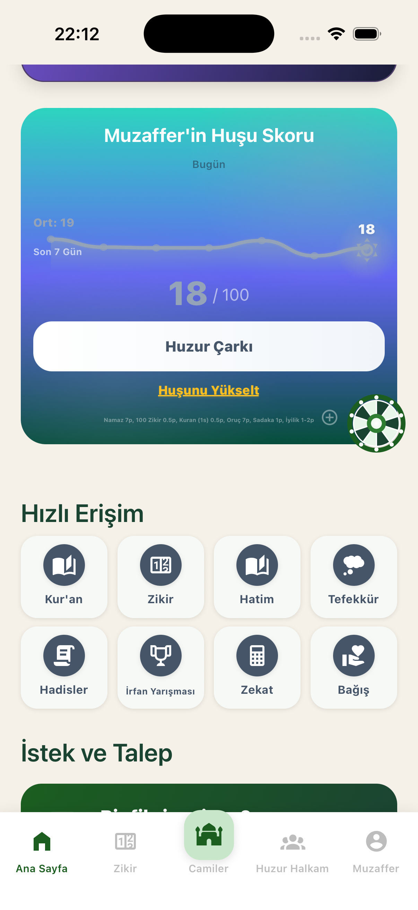
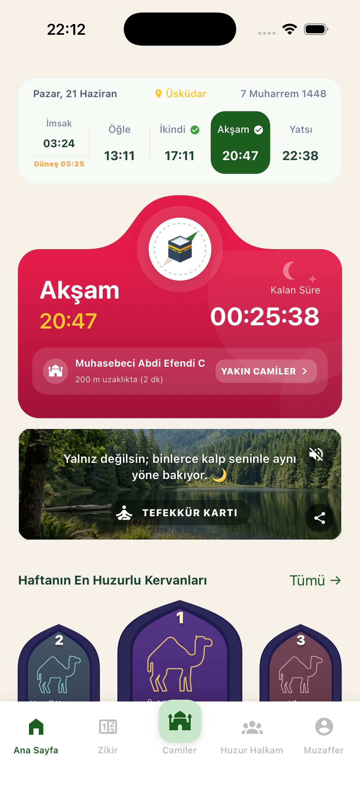
Özellikler
Sade, güvenilir ve kapsamlı — günlük manevi ihtiyaçlarınız tek uygulamada.
Konumunuza göre hassas 5 vakit, Hicri takvim. Tam ekran ezan alarmı Uşşak, Hicaz ve Rast makam seçimiyle.
Namaz 7p, zikir 0.5p, Kur'an 0.5p, oruç 7p, sadaka 1p. İbadet eğriminizi takip edin, tefekkür kartlarıyla ilham alın.
Arkadaşlarla kervan kurun. Sükunet puanı biriktirin, vahaya adım atın. Global sıralamada haftanın en huzurlu kervanı olun.
Niyete göre zikir seç — Salavat, Evlilik, Sağlık, Rızık, Eğitim. Grup halkaları, dua halkası ve hatim oluştur.
Yakınınızda 100+ cami haritada. İmam profili, cemaat üyeliği, etkinlikler ve cami buluşma planı oluşturma.
Pusula ile Ka'be yönü, hesaplanan açı ve mesafe. Hizalamayla titreşim geri bildirimi. Nerede olursanız olun.
Her gün bir kez çevir; dua, ayet, hadis, tefekkür, sadaka veya 10 Huşu Puanı kazan. "Bugün kalbine düşen nasibi gör."
Dostlar, planlar, cemaat ve kervan tek çatıda. Arkadaşlarını namaza davet et, nudge ile hatırlat, birlikte ilerle.
İmam profiline başvur, cami hikayesi yaz, etkinlik oluştur. Cemaat üyeleri için duyuru ve istatistik tablosu.
Uygulama açmadan namaz vakti, zikir sayacı, hadis ve tefekkür. iOS kilit ekranı destekli 3 farklı widget.
İmsakiye, iftar geri sayımı, sahur alarmı ve Ramazan duaları. Toplu iftar alarmını tek dokunuşla kur.
Kur'an & ibadet bilgi yarışması, peygamber kişilik analizi. TL, döviz, altın ve gümüş üzerinden zekat hesabı.
Uygulama Ekranları
Her detay, ibadet hayatınızı kolaylaştırmak için düşünüldü.
🏠 Ana Sayfa
Vakitler, Kervan & Tefekkür
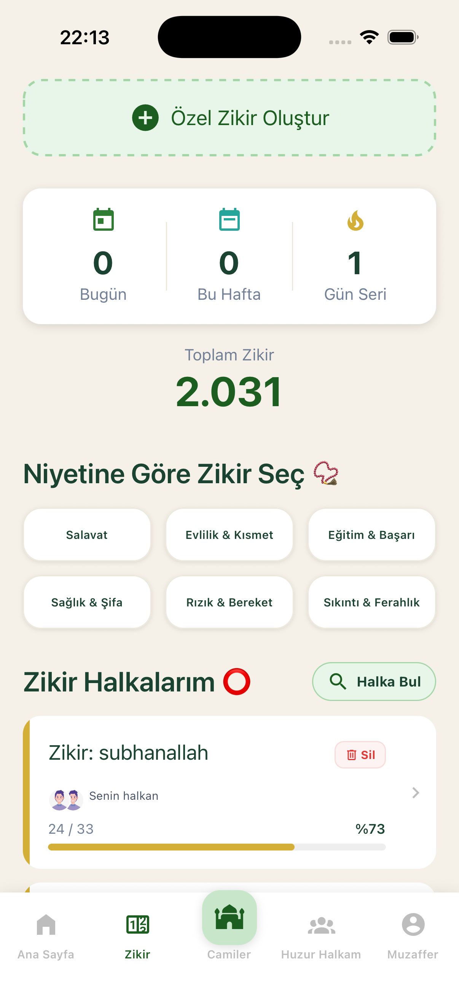
📿 Zikir Matik
Niyete göre & halka sistemi
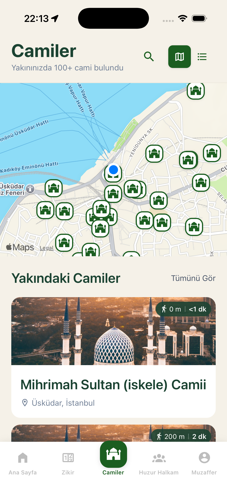
🕌 Cami Bulucu
Haritada 100+ cami
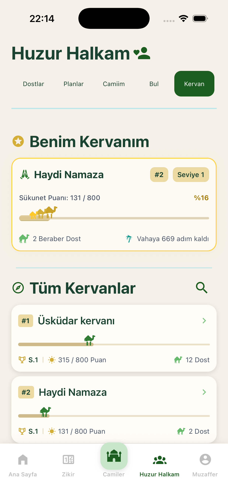
🐪 Kervan
Sükunet puanı & vaha
📊 Huşu Skoru
İbadet takip & Huzur Çarkı
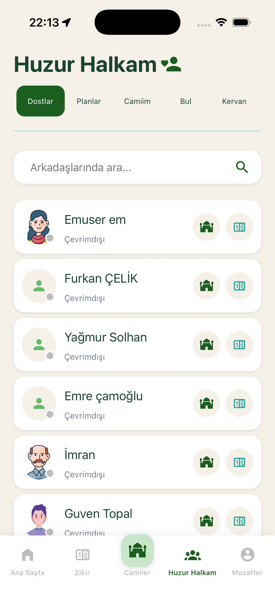
👥 Huzur Halkam
Dostlar, planlar & cemaat
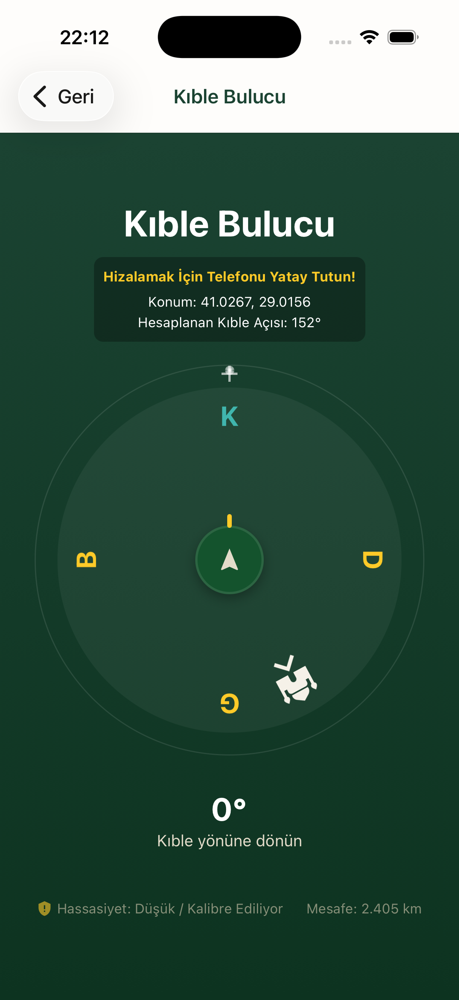
🧭 Kıble Bulucu
Pusula & Ka'be mesafesi
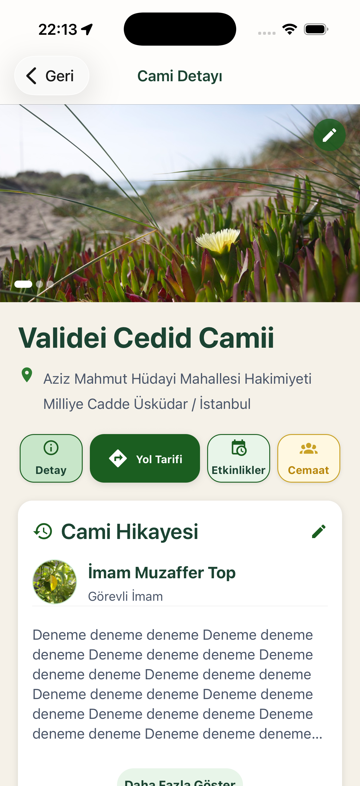
👨💼 İmam Profili
Cami hikayesi & etkinlikler
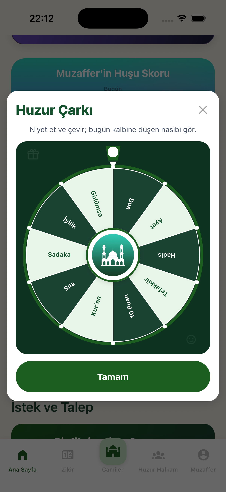
🎡 Huzur Çarkı
Günlük manevi görev & ödül
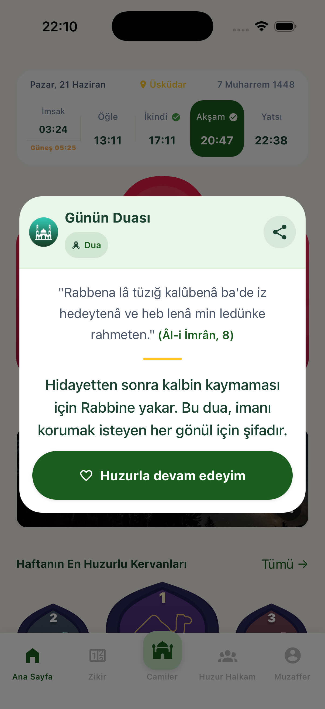
🤲 Günün Duası
Ayet, hadis & tefekkür
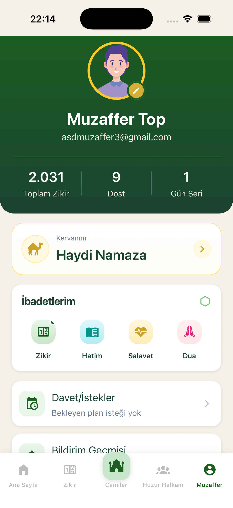
👤 Profil
İbadetlerim & kervan
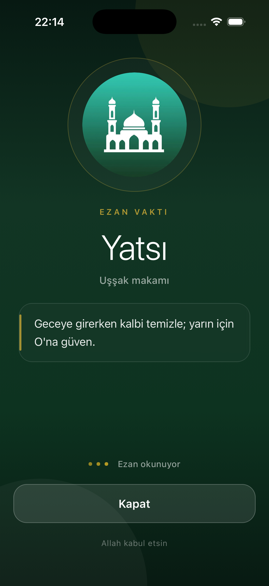
🔔 Ezan Alarmı
Makam seçimli tam ekran ezan
⭐ Öne Çıkan Özellik
Arkadaşlarınızla bir kervan kurun. Her namaz ve zikir sizi vahaya bir adım daha yaklaştırır. Global sıralamada yerinizi alın, haftanın en huzurlu kervanı ana sayfada yer alsın.
Çölde ilerleyen deve kervanı metaforu ile manevi yolculuk
5 vakit namaz + zikir = kervanın vahaya yaklaşması
Yavaşlayan kervan dostuğunu nazikçe hatırlat
Haftanın en huzurlu kervanları ana sayfada sergilenir
📊 İbadet Takibi
İbadetleriniz artık ölçülebilir. Namaz, zikir, Kur'an, oruç ve sadakadan puan biriktirin. Kişisel eğriminizi takip edin, skora göre tefekkür ve zikir önerileri alın.
Yorumlar
"Ezan alarmı müthiş — telefon kilitliyken bile tam ekran açılıyor. Makam seçimi çok güzel bir dokunuş."
"Kervan özelliği arkadaşlarımla ibadet etme motivasyonumu inanılmaz artırdı. Sükunet puanı biriktirmek çok eğlenceli."
"Zikir halkaları çok güzel. Arkadaşlarımla ortak halka kurup birlikte subhanallah çekiyoruz. Allah razı olsun."
"Huşu Skoru hangi ibadette eksik kaldığımı gösteriyor. Gerçekten fark yaratan, düşünülmüş bir özellik."
"Cami bulucu seyahatte çok işime yarıyor. Nereye gitsem yakındaki camileri anında bulabiliyorum."
"Huzur Çarkı her sabah uygulamayı açmanın sebebi oldu. Günün duasıyla başlamak güne farklı bir anlam katıyor."
"İmam olarak kayıt oldum, cami etkinlikleri paylaşabiliyorum. Dijital cemaat yönetimi harika çalışıyor."
"Ezan alarmı müthiş — telefon kilitliyken bile tam ekran açılıyor. Makam seçimi çok güzel bir dokunuş."
"Kervan özelliği arkadaşlarımla ibadet etme motivasyonumu inanılmaz artırdı. Sükunet puanı biriktirmek çok eğlenceli."
"Zikir halkaları çok güzel. Arkadaşlarımla ortak halka kurup birlikte subhanallah çekiyoruz. Allah razı olsun."
"Huşu Skoru hangi ibadette eksik kaldığımı gösteriyor. Gerçekten fark yaratan, düşünülmüş bir özellik."
iOS ve Android'de ücretsiz. Kayıt olmadan namaz vakti, kıble ve cami bulucu hemen kullanılabilir. Kervan ve sosyal özellikler için ücretsiz üye olun.
Canlı Ka'be yayını uygulamada mevcut
SSS
Evet, tamamen ücretsizdir. Namaz vakitleri, kıble bulucu, cami bulucu ve zikir matik gibi temel özellikler kayıt olmadan kullanılabilir. Kervan, cemaat ve arkadaş özellikleri için ücretsiz kayıt gereklidir.
Kervan, arkadaşlarınızla birlikte kurduğunuz ibadet grubudur. Her namaz ve zikir Sükunet Puanı kazandırır. Puan biriktirdikçe vahaya adım adım ilerlersiniz. Global sıralamada haftanın en huzurlu kervanı ana sayfada yer alır.
Namaz 7p, 100 zikir 0.5p, Kur'an (1 sayfa) 0.5p, oruç 7p, sadaka 1p, iyilik 1-2p kazandırır. Puan aralığına göre farklı tefekkür kartları ve zikir önerileri alırsınız.
Profil ekranında "İmam Başvurusu" menüsünden il, ilçe ve camini seçip bilgilerini doldurabilirsin. Onaylandıktan sonra cami hikayesi yazabilir, etkinlik ekleyebilir ve cemaat duyuruları yapabilirsin.
iOS ve Android'de üç farklı widget mevcuttur: Namaz Vakitleri, Zikir Sayacı ve Hadis & Tefekkür. iOS'ta kilit ekranı widget desteği de bulunmaktadır.
Zikir matik ve daha önce yüklenen namaz vakitleri çevrimdışı çalışır. Cami haritası, kervan ve sosyal özellikler için internet bağlantısı gereklidir.